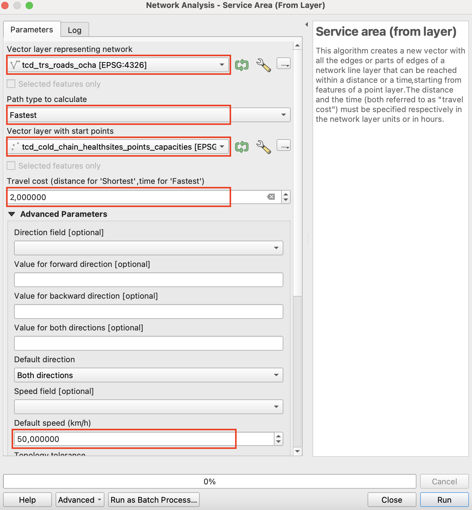

Exercise 3: Assessing Accessibility to Vaccination Services#
Background#
Following your analysis of measles incidence rates per district, the Ministry of Health now wants to identify which populations have limited access to vaccination services. In this exercise, you will learn a simplified approach on how to model accessibility and determine how many people live beyond a reasonable travel distance from a vaccination point.
Accessibility to health services is a key determinant of vaccination coverage. In many rural parts of Chad, communities may not have access to motorised transport and rely on walking or infrequent public transport. Thus, distance alone is not always a good measure — travel time provides a more realistic assessment.
Available Data#
Dataset name |
Description |
Source |
|---|---|---|
|
Base project with administrative boundaries, health facility capacities, and incidence rates |
— |
|
2025 population estimate per grid-cell |
|
|
Vaccination points (healthsites with cold chain) |
Derived in Exercise 1 |
|
Administrative boundaries (district level) |
|
|
Chad - Road Network |
Scenario#
You have identified a number of health facilities equipped with a cold chain for vaccine storage. The goal now is to calculate how much of the population is within reasonable reach of these facilities, and how many people live beyond the accessible range.
To do this, you will generate travel-time surfaces around vaccination points and then use WorldPop data to estimate the population covered within each accessibility zone. This approach simplifies reality but provides a useful approximation of service coverage.
Task 1: Opening the Project and Preparing the Data#
Open your QGIS project from Exercise 2.
Verify that the following layers are loaded:
tcd_admbnda_adm2_20250212_AB.shp(district boundaries)tcd_healthsites_points_capacities.gpkg(vaccination points)tcd_pop_2025_CN_100m_R2025A_v1.tif(population raster)tcd_roads_ocha.shp(road network)
Now we need to filter the
tcd_healthsites_points_capacitieslayer to only include healthsites with a cold chain for vaccine storage. We will do so by opening the “Attribute table” and clicking on “Select features using an expression”
Now click on the “Fields and Values” section and double-click on cold_chain
"cold_chain" = true
Now right click on the
tcd_healthsites_points_capacities→Export→Save Selected Features As...Save it as a “Geopackage” in your
/data/interim/-folder. Use a name liketcd_cold_chain_healthsites_points_capacities. Now we have only the healthsites that also provide a cold chain for vaccine storage and could be considered for a vaccination campaign.
Task 2: Creating Accessibility Area Around Vaccination Points#
Open the “Service area (from layer)” tool in the Processing Toolbox.
Select the following parameters to run a Network Analysis. The algorithm creates a new vector with all the edges or parts of edges of a network line layer that can be reached within a distance or a time, starting from features of a point layer.
For the Vector layer representing network select the Chad road network
tcd_roads_ochaPath type to calculate should be
Fastest, as we want to work with travel timeVector layer with start points is the newly created
tcd_cold_chain_healthsites_points_capacitiesTravel cost will be
2as the information for the fastest path type is given in hours. So 2 will correspond to 2 hours of travel timeThe speed will be left at the Default speed of 50 km/h

The output will be called
Service area (lines)and will include the road network accessible from a given healthsite within 2 hours of travel time at a travel speed of 50 km/h. To further process this data we need to reproject it to a metric CRS that depicts Chad without distorting too much. Select EPSG: 102022 and reproject theService area (lines). The output layer will be calledReprojected.To produce a more realistic representation of the accessible area around each vaccination point, we will buffer the
Service area (lines)layer. Before buffering, we first need to “Dissolve” the service-area lines so they form a single unified geometry.Open the “Dissolve” tool and use the reprojected output as the Input layer
In Dissolve fields, we won’t select anything
Now we can buffer the Dissolved Service area lines by 2 km, which corresponds to around 30 minutes of walking.
Input layer will be the result of the dissolving process (likely called
Dissolved)Set the buffer distance to 2 km. The output should look similar to the screenshot below: the green area represents the estimated 2-hour accessibility zone around the vaccination points along the road network.

Save the buffered service area by right-clicking on it and selecting
Make permament.... Select “Geopackage” as the output format and save the layer to thedata/interim/-folder and enter a file name such asaccess_vaccination_points. ClickSave.
{kind=link}
Task 3: Calculating Population Coverage Using WorldPop#
Next, we will generate several population statistics. First, use the admin boundaries together with the WorldPop raster to calculate the total population for each district.
In the Processing Toolbox, search for the tool Zonal Statistics and open it.
Input layer:
tcd_admbnda_adm2_20250212_AB.shpRaster layer:
tcd_pop_2025_CN_100m_R2025A_v1.tifRaster band: only 1 possible selection
Output column prefix:
pop_total_Statistics ot calculate:
SumOutput file name:
pop_total_adm2
Then, run an “Intersection” between the district boundaries with the total population information, and the service-area polygon. This step splits the single accessibility area into separate pieces that align with the district boundaries.
In the Processing Toolbox, search for the tool Intersection and open it.
Input layer:
pop_total_adm2Overlay layer:
access_vaccination_pointsOutput file name:
adms_access_vaccination_pointsThen run the algorithm. The output will be the access-to-vaccination geometry with the district information added. In other words, the single access area is split into multiple parts where it intersects district boundaries, assigning each portion to the corresponding district.
With these intersected geometries, we can then calculate how many people fall within the 2-hour access zone across all districts, providing an estimate of district-level population coverage for vaccination services.
In the Processing Toolbox, now search again for the tool Zonal Statistics and open it.
Raster layer:
tcd_pop_2025_CN_100m_R2025A_v1.tifVector layer containing zones:
adms_access_vaccination_pointsStatistics to calculate:
SumOutput column prefix:
pop_vaccination_Output file name:
population_within_isochrones
Now we have calculated the total population located within the 2-hour travel-time access area (plus the buffered area), representing the population that can be reached for vaccination within each district.
In a final step we will estimate the number of people living more than 2 hours away from the nearest vaccination facility — a key metric for identifying areas where mobile vaccination teams or temporary outreach sites may be needed.
Open the Attribute table and access the Field Calculator
Give the Output field name
pop_beyond_2hOutput field type will be
Decimal Number (real)And the expression
"pop_total_sum" - "pop_vaccination_sum"

Task 4: Visualising Accessibility#
To visualize the
population_within_isochronesdata we need to join it back onto the original admin 2 boundaries to have the original geometry. Open the Join attributes by field value tool:Input layer:
tcd_admbnda_adm2_20250212_AB.shpTable field:
ADM2_PCODEInput layer 2:
population_within_isochronesTable field 2:
ADM2_PCODELayer 2 fields to copy:
pop_total_sum,pop_vaccination_sum,pop_beyond_2hOutput file name:
population_vaccination_adm2
Symbolise your
population_vaccination_adm2layer using graduated colours by travel time.Overlay the population raster to highlight populated areas outside the 120-minute zone.
Optionally, apply hillshade from a Digital Elevation Model (DEM) for terrain context.
Label districts by their
pop_beyond_2hvalue to identify priority areas for vaccination campaigns.
Discussion#
The resulting map shows which districts and settlements are effectively served by fixed vaccination points, and which remain outside practical reach. In real-world scenarios, such analysis can help humanitarian planners:
Identify underserved areas and plan mobile vaccination campaigns.
Estimate resource needs for outreach teams.
Compare access under different travel scenarios (e.g. walking vs motorised).
Note
Always interpret accessibility results with caution — OpenRouteService uses public road network data (OpenStreetMap), which may not reflect seasonal accessibility or informal paths. Field validation and coordination with local health teams are essential for operational planning.
✅ Deliverable:
A map and summary table showing the population within 30, 60, 120, and 240 minutes of travel to vaccination sites, and the proportion of population living beyond the 120-minute threshold per district.